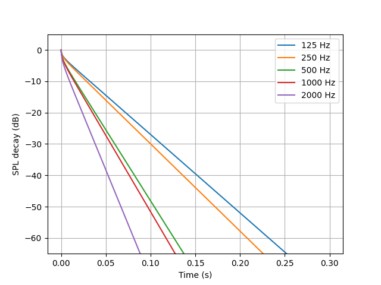
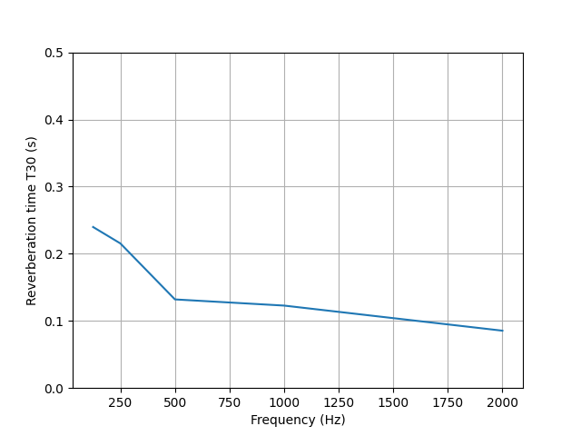

Note
Go to the end to download the full example code.
The Finite Volume Method
Simulate the energy decay in a cuboid room using the Finite Volume diffusion equation.
After installing the package and reading the documentation in Finite Volume Method Use Documentation, the software can be tested with the following files:
cube.skp
cube.geo
cube.msh
These files can be found in the example folder.
The file cube.skp is a SketchUp file containing a room with volume \(3 \times 3 \times 3 \ \mathrm{m}^3\). The files cube.geo and cube.msh are both important files created and saved according to the instructions in Finite Volume Method Use Documentation — Geometry & Mesh.
The inputs need to be prepared. For that, follow the instructions in Finite Volume Method Use Documentation — General Inputs. This will create a CSV file that you must fill with the absorption coefficients.
import os
import tempfile
import pandas as pd
import json
import numpy as np
import matplotlib.pyplot as plt
import pooch
from acousticDE.FiniteVolumeMethod.FVMfunctions import (
create_vgroups_names, number_freq)
from acousticDE.FiniteVolumeMethod.FVM import run_fvm_sim
temp_dir = tempfile.TemporaryDirectory()
script_dir = temp_dir.name
General input variables
input_data = {
"coord_source": [1.5, 1.5, 1.5], #source coordinates x,y,z
"coord_rec": [2.0, 1.5, 1.5], #rec coordinates x,y,z
"fc_low": 125, #lowest frequency
"fc_high": 2000, #highest frequency
"num_octave": 1, # 1 or 3 depending on how many octave you want
"dt": 1/20000, #time discretization
"m_atm": 0, #air absorption coefficient [1/m]
"th": 3, #int(input("Enter type Absortion conditions (option 1,2,3):")) # options Sabine (th=1), Eyring (th=2) and modified by Xiang (th=3)
"tcalc": "decay" #Choose "decay" if the objective is to calculate the energy decay of the room with all its energetic parameters; Choose "stationarysource" if the aim is to understand the behaviour of a room subject to a stationary source
}
# Download the mesh file from GitHub
file_path = pooch.retrieve(
url="https://github.com/Building-acoustics-TU-Eindhoven/acousticDE/raw/refs/heads/master/examples/cube.msh",
known_hash=None,
path=script_dir,
fname="cube.msh"
)
Creation of json
fname_input_configuration = "cube_input_fvm.json"
with open(os.path.join(script_dir, fname_input_configuration), "w") as f:
json.dump(input_data, f, indent=4)
print("Input file successfully created: cube_input_fvm.json")
Input file successfully created: cube_input_fvm.json
Creation of csv for absorption
# Get the names of the mesh's boundaries
vGroupsNames = create_vgroups_names(file_path)
# Get the number of frequency bands and their center frequencies for the
# specified frequency range and number of octaves
nBands, center_freq = number_freq(
input_data["num_octave"],
input_data["fc_high"], input_data["fc_low"])
# Create DataFrame containing the absorption coefficients
column_names = ["Material"] + [f"{int(fc)}Hz" for fc in center_freq]
csv_path = os.path.join(script_dir, "absorption_coefficients.csv")
surface_names = [group[2] for group in vGroupsNames if group[0] == 2]
# Set all absorption coefficients to be equal on all boundaries.
data = np.array([0.3, 0.33, 0.5, 0.53, 0.7])
absorption_coefficients = pd.DataFrame(columns=column_names)
absorption_coefficients["Material"] = surface_names
absorption_coefficients[absorption_coefficients.columns[1:]] = np.broadcast_to(
data, (absorption_coefficients.shape[0], nBands))
absorption_coefficients[absorption_coefficients.columns[1:]] = data
absorption_coefficients.to_csv(csv_path, index=False)
Run simulation
result = run_fvm_sim(
file_path,
os.path.join(script_dir, fname_input_configuration),
csv_path)
print("Reverberation time T30 band values:", result["t30_band"])
print("Early decay time EDT band values:", result["edt_band"])
print("Clarity C80 band values:", result["c80_band"])
print("Definition D50 band values:", result["d50_band"])
print("Centre time Ts band values:", result["ts_band"])
Completed initial geometry calculation. Starting internal tetrahedrons calculations...
Completed internal tetrahedrons calculation. Starting boundary tetrahedrons calculations...
Completed boundary tetrahedrons calculation. Starting main diffusion equation calculations over time and frequency...
0% of main calculation completed
20% of main calculation completed
40% of main calculation completed
60% of main calculation completed
80% of main calculation completed
100% of main calculation completed
Simulation finished successfully! Results in resultsFVM.pkl file
Reverberation time T30 band values: [0.23983422 0.21537999 0.13200185 0.12280077 0.08542459]
Early decay time EDT band values: [0.22346011 0.19798942 0.11191539 0.10267346 0.06650958]
Clarity C80 band values: [19.95931515 22.24865492 36.34694697 39.07168659 56.17510402]
Definition D50 band values: [94.38457727 95.95099404 99.46630776 99.63948715 99.9692925 ]
Centre time Ts band values: [22.59307887 20.75763686 14.34802766 13.61486832 10.5233194 ]
Plotting Energy decay curve
times = result['t'][:len(result['t'])//2]
energy_decay_curve = np.array(result['w_rec_off_band'])
plt.figure()
ax1 = plt.axes()
ax1.plot(
times,
10*np.log10(energy_decay_curve.T/energy_decay_curve[:, 0]),
label=[f'{int(band)} Hz' for band in center_freq])
ax1.set_ylim(-65, 5)
ax1.legend()
ax1.grid(True)
ax1.set_ylabel("SPL decay (dB)")
ax1.set_xlabel("Time (s)")

Text(0.5, 23.52222222222222, 'Time (s)')
Plotting Reverberataion time T30
t30 = np.array(result['t30_band'])
plt.figure()
ax2 = plt.axes()
ax2.plot(
center_freq,
t30,
label=[f'{int(band)} Hz' for band in center_freq])
ax2.set_ylim(0, 0.5)
ax2.grid(True)
ax2.set_ylabel("Reverberation time T30 (s)")
ax2.set_xlabel("Frequency (Hz)")

Text(0.5, 23.52222222222222, 'Frequency (Hz)')
temp_dir.cleanup()
Total running time of the script: (0 minutes 1.522 seconds)